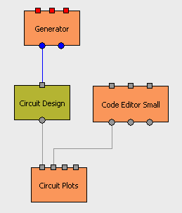

Brick Circuit Design  ( august 2009 )
( august 2009 )
Application Designer / Domain Expert / Control Designer / Core Developer
Introduction
|
Circuit Designer is a simple object drawing canvas, specially suited for electronic circuits, Finite State Machine, flow charts etc. If the drawing contains connected electrical objects, you can feed (multiple) input signals into the circuit and the Bricks outputs netlists and responses. For Finite State Machine and Flow Charts, the Brick can generate the corresponding program code ( At the moment this is not realized, but implementations for Python, Delphi and JAL are expected soon, and it should be easy to extend that to any language) |
 |
Here the code editor with it's component libraries. For the moment the general picture library of PyLab_Works is used. These pictures should be ordered in some categories, but dpon't know yet how to realize that in the most simple way, without redundancy.
When selecting a component, 4 corner anchors appear, giving you a fast way to rotate, mirror the component and set its labels.
Editing of the parameters of a component:
Creating Components
At the moment each component is stored in a separate file. A component file and can be of any size and of any graphical type, preferable one that supports transparency. You can use any pixel editor, preferable one that really supports transparency (Paint and Paint Shop Pro 5 DON'T). Because of the simple approach, you can even cut a drawing from an existing datasheet. An good icon editor is often quit comfortable, because it's specially made to create these kind of small pictures. I like IconEditor Pro V7:
A connection point is made automatically, for each black point on one of the four borders.
The labels are placed automatically, depending on the rotation of the component. If the component has no rotation or 180 degrees, the labels are place just right next to the component, at the top and the bottom, so keep some white space at the right of a component.
If the component is rotated 90 or 270 degrees, the labels are placed on the right half, within the height of the component.